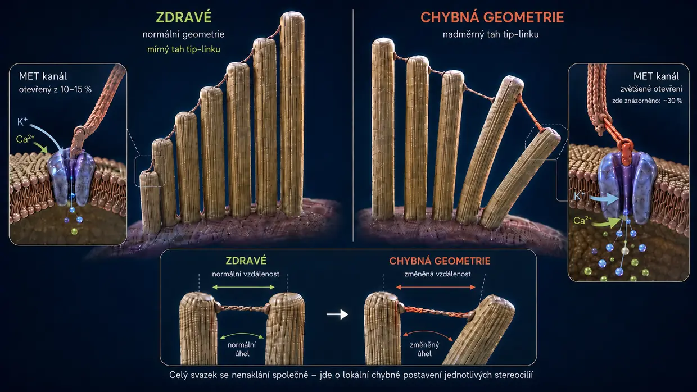
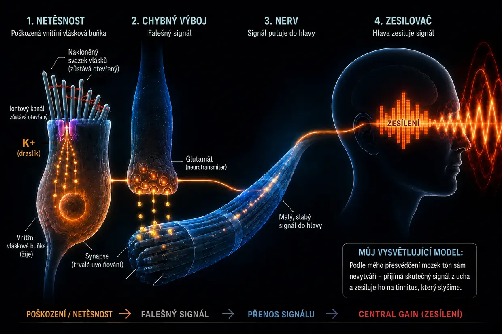

Tinnitus způsobený hlukem – když ucho narazí na své hranice
Naposledy aktualizováno: srpen 2026
Toto je moje vlastní vysvětlení založené na dlouholeté rešerši a na dvou vlastních případech tinnitu, které jsem překonal – nejde o medicínský standard.
I já jsem tehdy tímto extrémním onemocněním trpěl – jak už jsem popsal ve své biografii.
Byl jsem tak zoufalý, že jsem si přísahal: Buď odejde tinnitus, nebo odejdu já. (Samozřejmě jsem to nemyslel až tak vážně, byl jsem ale skutečně pod obrovským tlakem.)
Tehdy jsem vnímal hlavně hlasitý, pronikavý vysokofrekvenční tón v levém uchu, doprovázený šuměním daleko v pozadí. Bylo to to nejhorší, co jsem si v té době vůbec dokázal představit. Aby toho nebylo málo, třetí den se už i v pravém uchu objevil slabý pískavý tón. Krátce nato tento už přítomný tón v pravém uchu výrazně zesílil – jako přímý důsledek pokynů lékařů, které se pro mě osobně ukázaly jako naprosto chybné.
Podstatou těchto „pokynů“ bylo překrývat tón dalšími zvuky – například hudbou ve sluchátkách při vyšší hlasitosti nebo nepřetržitým šumem. Ve skutečnosti to ale znamenalo, že moje uši dostávaly ještě více zvukových podnětů, přestože už byly výrazně přetížené. Zpětně to byla jedna z největších chyb, protože právě tím se můj stav zhoršil a už přítomný slabý tón v pravém uchu výrazně zesílil.
Zvuk byl jako nepřetržitý útok na moje nervy, spánek a celý život. Lékaři mi říkali, že se s ním musím naučit žít. Na internetu jsem nacházel terapie, které si navzájem odporovaly. Mně to všechno připadalo jako bezradnost.
Přísahal jsem si tedy: Tohle nemůže být všechno. Začal jsem jako posedlý hledat informace, číst studie, porovnávat osobní zkušenosti a vytvářet si vlastní obraz. Postupně se vynořil jasný mechanismus – obraz, který mi připadal logický a později se potvrdil i v mých vlastních zkušenostech.
Dnes mohu říct: Tinnitus způsobený hlukem není žádná záhada. Je výsledkem přetížení ucha – a když člověk pochopí, co se při něm děje, pochopí také, proč zvuk vzniká a co může sám udělat.
Stručné shrnutí Přečti si za 60 sekund to nejdůležitější
Při extrémní hlasitosti (například na diskotéce) už pumpy jednoduše nestíhají. Spotřeba energie (ATP) prudce stoupne, buňka ji nedokáže doplňovat a přejde do nečistého nouzového režimu, při němž vzniká kyselina mléčná a prostředí se okyseluje – sestupná spirála podobná selhání svalů při sprintu. Když pumpy přestanou stíhat, uvnitř drobných smyslových vlásků se hromadí vápník. Tento přebytečný vápník aktivuje rozkladné enzymy (kalpainy), které rozežírají „lepidlo“ (crosslinkery) mezi vnitřními strukturními vlákny vlásku. Bez tohoto lepidla ztrácí vlásek tuhost a deformuje se. Iontový kanál na jeho špičce proto zůstává trvale příliš otevřený – jako vyklopené okno. Touto trvalou netěsností neustále proudí dovnitř draslík, který udržuje celou buňku pod trvalým elektrickým napětím. Toto napětí otevírá přímo ve vnitřní vláskové buňce další kanály, jimiž vápník odkapává k synapsi a spouští tam nepřetržité uvolňování glutamátu ke sluchovému nervu. Mozek přijímá tento tichý, ale stálý chybný signál, pozná, že v daném frekvenčním pásmu chybí normální vstup, a vytočí svůj vnitřní předzesilovač (Central Gain) mimořádně vysoko. Teprve tímto zesílením se nepatrný chybný signál promění ve vědomě vnímaný tón – tinnitus.
Dobrá zpráva: Dokud buňka žije, má stavební plán a schopnost opravy. Potřebuje k tomu energii, stavební materiál a klid.
Co se skutečně děje v uchu: normální fyziologický proces slyšení
Než se ponoříme do podrobností, krátce si vyjasněme pojmy, abychom si v celém textu správně rozuměli: Ve vnitřním uchu se nacházejí takzvané vláskové buňky – vlastní smyslové buňky sluchu. Na povrchu každé vláskové buňky stojí svazek drobných prstovitých výběžků – stereocilií. Podle polohy v hlemýždi jich na jednu vláskovou buňku připadá zhruba 50 až 300; jsou seřazené od krátkých po dlouhé jako varhanní píšťaly. Každá stereocilie má vlastní vnitřní podpůrnou kostru z aktinových bílkovin. V běžném životě i ve výzkumu se stereocilie často označují jednoduše jako „vlásky“ nebo „smyslové vlásky“ – a právě tak tento pojem používám i na této stránce. Důležité je: Když mluvím o „vláscích“, vždy tím myslím stereocilie na vláskové buňce, nikoli samotnou vláskovou buňku.
Důležité pro signální řetězec: Když popisuji uvolňování glutamátu v synapsi a signál do sluchového nervu, výslovně tím myslím vnitřní vláskovou buňku.
Za normálních okolností probíhá slyšení jako mimořádně přesná řetězová reakce:
Impuls: Zvukový podnět dopadne na jemné vlásky (stereocilie) vláskových buněk a ohne je do strany.
Mechanický tah (tip-linky): Protože jsou špičky vlásků navzájem spojené mimořádně jemnými bílkovinnými vlákny (tip-linky), ohnutím vzniká napětí. Tato vlákna fungují jako mechanické lanko: Fyzicky otevřou iontový kanál na špičce – podobně jako když člověk zatáhne za špunt ve vaně.
Přítok: Protože je vnitřní ucho naplněné tekutinou bohatou na draslík, otevřeným kanálem okamžitě proudí do smyslového vlásku draslík (K+) – a v malém množství také vápník.
Aktivace: Přítok draslíku mění elektrické napětí vnitřní vláskové buňky (depolarizace). Tím se sekundárně otevírají vápníkové kanály níže v samotné vnitřní vláskové buňce – nikoli ve smyslových vláscích, ale v těle buňky pod nimi.
Signál: Teprve tento vápník proudící do vnitřní vláskové buňky vyvolá uvolnění neurotransmiterů, které vysílají signál přes sluchový nerv do mozku.
Reset: Specializované transportéry potom – ve smyslových vláscích i v těle vláskové buňky – pomocí ATP (buněčné energie) znovu odčerpají přebytečný draslík a vápník ven, aby se buňka mohla uklidnit.
Systém je navržený tak, aby v něm neustále probíhalo malé „zapnutí a vypnutí“ – podobně jako rytmus dechu. Rozhodující je, že kanál na špičce vlásku není v klidovém stavu úplně uzavřený, ale vždy zůstává nepatrně otevřený. Je to normální a žádoucí, aby buňka mohla kdykoli okamžitě reagovat i na nejtišší zvuk. Dokud vlásek stojí rovně, zůstává otvor minimální a kontrolovaný. Pokud se ale vlásek trvale nakloní do strany, zůstane kanál otevřený příliš – a právě to se stává problémem.
Než se teď podíváme, co se stane při přetížení tohoto systému, jedna důležitá myšlenka: Když po akustickém traumatu vznikne chronický tinnitus, mnoho lidí s tinnitem si myslí – a mnoho lékařů tento dojem také vytváří –, že vláskové buňky v uchu jsou nevratně zničené a mozek teď tón samostatně vytváří ze vzpomínky. Podle mého přesvědčení je to příliš zjednodušené. Právě proto, že tón JE přítomný, musí podle mého přesvědčení někde ve stále dráždivé periferní tkáni vznikat aktivní chybný signál. V mém hlavním řetězci vychází tento signál ze stále živé, chybně regulované vnitřní vláskové buňky. V jiných periferních situacích by jeho zdrojem mohl být i živý sluchový nerv, který chybně vysílá kvůli problémům s myelinem nebo zánětu. Zcela odumřelá tkáň naproti tomu už žádný signál nevysílá.
Následuje podrobné vysvětlení tohoto funkčního selhání krok za krokem. Kdo chce stručnější verzi, najde výše na této stránce stručné shrnutí.
Když je hluk příliš silný (co se děje při návštěvě diskotéky)
Když ale na ucho působí příliš mnoho zvuku najednou nebo dlouhodobě (chronicky), rovnováha se zvrátí a mechanika selže. Ne každá návštěva diskotéky k tomu vede – pokud však tinnitus způsobený hlukem vznikne, stojí za ním podle mého přesvědčení právě tento mechanismus: kaskáda ztráty energie, mechanického kolapsu a chemického zaplavení – tři procesy, které se navzájem přiživují a ústí v začarovaný kruh.
- 01Energetický kolaps
- 02Mechanický kolaps
- 03Nouzová záchrana a křeččí kolo
Fáze 1: Energetický kolaps
Připomeňme si normální proces slyšení: Při každém zvukovém podnětu proudí do buňky ionty a poté se musí za spotřeby ATP znovu odčerpat ven. Při normální hlasitosti jde o klidný rytmus – buňka si pohodlně pumpuje a má energie nadbytek. Při 100 decibelech na diskotéce však zvukové vlny dopadají na vlásky nepřetržitě a s brutální silou. Kanály se prudce otevírají, ionty proudí dovnitř ve velkém a pumpy už jednoduše nestíhají. Spotřeba energie prudce roste.
Vláskové buňky nyní spalují podstatně více energie, než dokážou doplnit. Normální elektrárny buňky (mitochondrie) pracují na hranici svých možností. Aby vůbec dokázala pokrýt obrovskou potřebu energie, sáhne buňka po rychlejší, ale nečisté nouzové cestě: anaerobní glykolýze. Tento nouzový režim sice dodá energii okamžitě, jako odpadní produkt však vytváří kyselinu mléčnou (laktát), která posouvá buněčné prostředí ke kyselosti. Enzymy odpovědné za tvorbu energie jsou kvůli kyselosti stále méně účinné – vzniká sestupná spirála.
Přirovnání ke sportu: Každý to zná z posilování nebo sprintu. Po určité době začne sval „pálit“ (nárůst laktátu) a nakonec jednoduše vypoví službu – klasické svalové selhání. Přesně k tomuto chemickému selhání dochází i ve vnitřním uchu, jen ho člověk necítí jako bolest, nýbrž jako výpadek funkce.
A právě zde číhá skutečné nebezpečí: Když pumpy přestanou stíhat, uvnitř smyslových vlásků se hromadí vápník. V malém množství je tento vápník normální a nezbytný – v nadbytku se však mění v ničivou sílu. Co ničí a proč je to tak osudové, ukazuje fáze 2.
Fáze 2: Mechanický kolaps
Abychom pochopili, co nyní vápník způsobí, musíme krátce vědět, jak smyslový vlásek vypadá uvnitř: Tvoří ho stovky rovnoběžných aktinových vláken – můžeš si je představit jako svazek neuvařených špaget. Tato vlákna drží pohromadě krátké bílkovinné můstky, takzvané crosslinkery. Právě crosslinkery jsou skutečným statikem vlásku – svazek drží tak pevně pohromadě, že stojí tuhý jako ocelová trubka, zcela sám a bez spotřeby energie. Dokud jsou crosslinkery neporušené, vlásek stojí vzpřímeně.
Ztráta energie ve fázi 1 nyní spouští osudovou řetězovou reakci:
Pumpy jsou zahlceny (záplava vápníku): Jak jsme viděli u normálního procesu slyšení, společně s draslíkem vždy proudí do smyslového vlásku také malé množství vápníku. Za normálního provozu to není problém – přímo v membráně smyslového vlásku se nacházejí vlastní vápenaté pumpy, které tento vápník okamžitě odčerpávají ven. Jenže i tyto pumpy potřebují ATP. A při akutním přetížení na diskotéce energie zdaleka nestačí – pumpy jsou doslova zahlceny. Důsledek: I malé množství vápníku, které by za normálních okolností nepředstavovalo problém, se nyní hromadí uvnitř vlásku – a právě tato nadměrná koncentrace spouští vlastní kolaps struktury.
A teď přichází vlastní kolaps struktury: Nahromaděný vápník aktivuje zvláštní rozkladné enzymy (takzvané kalpainy). Tyto enzymy rozežírají právě crosslinkery, které jsme právě poznali – maltu, jež drží svazek pohromadě.
Aby bylo jasné, proč je to tak ničivé, pomůže jednoduchý obraz:
Vezmi do ruky jednu neuvařenou špagetu – můžeš ji snadno ohnout a zlomit. Teď vezmi sto špaget a slep je vteřinovým lepidlem do pevné tyče – najednou máš tuhou trubku, kterou téměř nelze ohnout. Jednotlivá vlákna jsou slabá, slepená dohromady jsou však silná.
Přesně tak funguje smyslový vlásek: Tuhost mu nedávají samotná aktinová vlákna, ale jejich spojení pomocí crosslinkerů.
Když nyní kalpainy toto lepidlo rozežerou, stane se pravý opak: Z tuhé trubky se znovu stanou jednotlivá volná vlákna. Aktinová vlákna jsou ve stereocilii stále přítomná – nezmizela, bez vzájemných spojů už ale nedrží pohromadě. Vlásek ztratí tuhost nikoli proto, že by se něco odlomilo, nýbrž proto, že mu chybí vnitřní soudržnost.
Pokud člověk zůstává na diskotéce dál, často se situace ještě zhorší: Nyní nechráněná, volně stojící jednotlivá vlákna se mohou při pokračujícím akustickém tlaku ve slabých místech skutečně zlomit – jako jednotlivé špagety, které se bez opory sousedních vláken pod zátěží podlomí. A když se jedno vlákno zlomí, zatížení sousedních vláken vzroste a ta se pak mohou zlomit také – hrozí kaskádový efekt.
Výsledek: Bez vnitřní opory už vlásek nedokáže udržet vzpřímenou polohu – deformuje se. Pro představu, co to znamená, pomůže následující obraz: Smyslové vlásky stojí vedle sebe v řadách, jsou různě dlouhé a na špičkách je spojují jemná vlákna (tip-linky). Ve zdravém stavu stojí všechny vlásky rovně jako svíčky – vlákna mezi nimi mají přesně správné napětí a kanál je v klidovém stavu otevřený jen minimálně. Přijde zvuková vlna, vlásky se krátce nakloní do strany, vlákna se napnou a kanál se otevře – jakmile vlna odezní, vrátí se zpět a vše se uvolní. Čisté zapnutí a vypnutí.
Nyní si představ, že stejné vlásky už nestojí rovně, ale jsou nakloněné – už BEZ příchodu zvukové vlny. Vlákna mezi nimi jsou trvale napnutá jinak, než mají být. Současně je deformovaná také membrána. Kanál proto zůstává už v klidovém stavu příliš otevřený. Od této chvíle proudí do buňky trvale a nekontrolovaně draslík a vápník, přestože už dávno nehraje žádná hudba. Vznikla trvalá netěsnost – a tím i základ pro tinnitus. Vnitřní vlásková buňka vysílá signál, přestože žádný zvuk není přítomný – protože geometrie už není správná.

Tinnitus způsobený hlukem se může projevit přímo po hlukové události, člověk si ho však může vědomě všimnout až po několika hodinách nebo dnech. Já jsem tón zaznamenal až třetí den; proč, to dodnes nevím jistě. Možná vysvětlení popisuji v častých otázkách výslovně jako hypotézy.
Fáze 3: Nouzová záchrana – a proč nestačí
Buňka poškození zaregistruje a okamžitě spustí mechanismus přežití: Speciální opravné bílkoviny (například XIRP2), které jsou už v těle buňky připravené jako nouzová zásoba, se ženou k poškozeným místům. Pokud se vlákna zlomila, ovinou místa zlomu (špagety z fáze 2) jako molekulární pancéřová páska a zabrání tomu, aby se zlomila úplně a kaskáda se vymkla kontrole. To je fáze 1: akutní nouzová stabilizace. Tento proces probíhá rychle (v řádu minut až hodin), protože se XIRP2 nemusí nejprve vyrobit – pouze se přesune k místu poškození. Smyslový vlásek přežije – kostra však zůstane měkká a nestabilní, protože XIRP2 nedokáže nahradit chybějící crosslinkery mezi filamenty.
Nyní by bezpodmínečně musela začít fáze 2 (aktivní remodelace) – a ta zahrnuje hned dvě staveniště: Zaprvé by se musely záplaty XIRP2 nahradit čerstvým, neporušeným aktinem. Zadruhé by se musely vytvořit nové crosslinkery a vložit mezi filamenty, aby svazek znovu slepily do pevné tyče. Obojí spotřebovává obrovské množství ATP, obojí potřebuje materiál z těla buňky a stereocilie nemají vlastní elektrárny (mitochondrie) – jsou zcela odkázané na dodávku energie zespodu, z těla vláskové buňky. Právě zde se však u většiny dospělých lidí sklapne chronická past. Proč, to vysvětluje následující kapitola.
-
01Energetický kolaps
Spotřeba ATP prudce stoupne, buňka přejde do nouzového režimu. Hromadí se kyselina mléčná a prostředí se okyseluje.
-
02Mechanický kolaps
Přebytečný vápník rozežírá „lepidlo“ mezi vlákny stereocilií. Vlásek se deformuje – vzniká netěsnost.
-
03Nouzová záchrana a křeččí kolo
XIRP2 stabilizuje místa zlomu. Buňka akutně přežije – na vlastní opravu však chybí energie.
Past křeččího kola: proč k opravě trvale nedojde
Nyní přichází rozhodující přechod od akutní události k chronickému problému.
Jakmile hluk ustane, začíná zotavení: Buňka okamžitě znovu zahájí tvorbu ATP a pumpy se krok za krokem vracejí k normálnímu provozu. Regenerace v plném rozsahu – odbourání kyselosti, opravné procesy a doplnění energetických zásob – pak probíhá především postupem času a zvláště ve spánku. Tělo tedy uklízí: Akutně nahromaděná záplava iontů – která vznikla jak při masivní zátěži na diskotéce, tak kvůli mezitím vytvořené netěsnosti – se postupně odčerpává ven. Extrémní vrchol koncentrace iontů se z velké části normalizuje a s ním klesne také hladina vápníku pod kritickou mez: Rozkladné enzymy (kalpainy) se deaktivují a aktivní poškozování struktury se zastaví.
Proč se však ucho přesto nezhojí?
Protože trvalá netěsnost přetrvává. Stereocilie zůstávají nakloněné, iontový kanál zůstává trvale příliš otevřený a pumpy musí tento přebytek odčerpávat nepřetržitě. Pro pochopení, proč právě to brání opravě, pomůže následující obraz:
Princip střechy, domu a sklepa
Aby bylo toto dilema pochopitelné na první pohled, představme si vláskovou buňku jako budovu napájenou jediným elektroměrem (ATP):
Střecha: Jemné smyslové vlásky (stereocilie) s oslabenou aktinovou kostrou, které uvízly v nouzovém režimu fáze 1. Zde nahoře se nachází netěsnost a právě tady by měl ve skutečnosti pracovat stavební tým. Místo toho jsou však pumpy přímo ve střeše zaměstnané neustálým odčerpáváním pronikajícího draslíku a především nebezpečného vápníku – pokud by zde nahoře vápník znovu překročil kritickou mez, hrozilo by, že se rozkladné enzymy opět aktivují a poškození zhorší.
Dům: Vlastní velké tělo buňky – a JEDINÉ místo, kde se nacházejí elektrárny (mitochondrie) vyrábějící ATP pro všechny oblasti buňky. Poškozenou střechou nyní nepřetržitě proudí dovnitř přebytečné ionty.
Sklep: Také zde dole se nacházejí iontové pumpy, které musí prosáklý vápník zoufale odčerpávat proti proudu, aby se dům zcela nezaplavil a buňka neodumřela.
Protože pumpy ve střeše i ve sklepě spotřebovávají většinu dostupné energie jen na to, aby budovu uchránily před zaplavením, nezbývají buňce prostředky na vyslání stavebníků a opravu poškozené aktinové kostry. Oprava se neustále odsouvá. Netěsnost zůstává otevřená. Pumpy dřou. Křeččí kolo se točí.
Od boje o přežití k tónu: tak vzniká tinnitus

Nyní víme, že trvalá netěsnost přetrvává a buňka uvízla v křeččím kole. Jak z toho ale vznikne slyšitelný tón? Neustále přitékající draslík udržuje celou vnitřní vláskovou buňku trvale pod elektrickým napětím (depolarizovanou) – nikdy se nevrátí ke svému klidovému potenciálu. Toto trvalé napětí zase otevírá napěťově řízené vápenaté kanály níže ve vnitřní vláskové buňce, jimiž nyní k synapsi nepřetržitě odkapává malé množství vápníku. Tento vápník spouští nepřetržité, mírné uvolňování neurotransmiteru glutamátu ke sluchovému nervu. Mozek přijímá trvalý signál „PAL!“ – přestože není přítomný žádný zvuk – a převádí tento chemický zkrat na zvukový vjem.
Co z toho udělá mozek: zesilovač, nikoli příčina
V této chvíli vstupuje na scénu mozek. Konvenční medicína často tvrdí, že se mozek tinnitus „naučil“ a nyní tón vytváří zcela samostatně. To je podle mého přesvědčení neúplné. Mozek tinnitus nevytváří z ničeho. Jako vysoce komplexní procesor reaguje na stálý chybný únikový proud glutamátu z ucha.
Protože kvůli poškození hlukem a nakloněným vláskům chybějí skutečné, čisté vnější signály (normální frekvence), dostává se sluchové centrum v mozku do jakéhosi smyslového strádání. Mozek na to jako evoluční ochranný mechanismus reaguje nekompromisně: Pro přesně tyto chybějící frekvence vytočí předzesilovač mimořádně vysoko – takzvaný „Central Gain“. Ve volné přírodě to bylo životně důležité, aby člověk i s poškozeným uchem zaslechl kroky plížícího se predátora. Mozek tedy vezme původně tichý proud z netěsnosti poškozených vnitřních vláskových buněk a prožene ho obrovským ekvalizérem. Signál zesílí na ohlušující sirénu, kterou vědomě vnímáme jako tinnitus.
Osudová past maskování: proč jsou aplikace se šumem to nejhorší, co můžeš udělat
Maskování spaluje jediné okno pro opravu, které tvému uchu zbývá.
Právě zde podle mé zkušenosti spočívá nejzávažnější chyba, kterou lidé s tinnitem – na doporučení lékaře – dělají. Klasické doporučení zní: „Překryjte tón bílým šumem, zvuky přírody nebo tichou hudbou.“ Intuitivně to zní logicky a krátkodobě to skutečně přináší úlevu. Podle mého chápání je to však z biochemického hlediska osudové.
Je třeba si uvědomit: Vlásky stále žijí a jsou aktivní – jsou však nakloněné. Buňka se vlastně snaží využít každou klidovou fázi (především ve spánku), aby pomocí zbývající energie opravila strukturu a znovu se narovnala.
Když však uši dál uměle vystavuješ zvuku, nutíš poškozené stereocilie zpět do pracovního režimu. Musejí znovu reagovat na zvuk, pumpovat ionty a spotřebovávají právě tu energii, kterou si šetřily na fázi 2 – vlastní opravu. A je tu ještě druhý problém: Každá zvuková vlna nechává aktinové filamenty v poškozeném svazku klouzat proti sobě. Čerstvě vložené crosslinkery se tímto neustálým pohybem znovu vytřesou dříve, než se dokážou správně navázat – jako příčka, kterou se snažíš vložit do žebříku, zatímco někdo žebříkem třese.
V obrazu střechy, domu a sklepa: Další uměle pouštěný zvuk už tak měkkou střechu mechanicky bičuje. Netěsnost zůstává příliš otevřená. Pumpy ve sklepě musejí 24 hodin denně pracovat na absolutní hranici. Pro stavebníky nahoře na střeše nezbývá vůbec žádná energie.
To vysvětluje jev, který jsem zažil sám a který popisuje nespočet lidí s tinnitem: Člověk v noci překryje tinnitus šumem, krátkodobě se cítí lépe, následující ráno je však tinnitus agresivnější a hlasitější než předchozí večer. Důvod: Buňka promarnila svou noční směnu – jediné okno pro opravu – zpracováváním umělého zvuku.
Upřímně k tomu dodávám: Naprosto chápu, proč mohou někteří lidé s maskováním dobře žít. Pokud tinnitus člověka psychicky žene do propasti a znemožňuje spánek, může být krátkodobé překrytí v pravém slova smyslu život zachraňující – a nikomu v takové situaci to nechci rozmlouvat. Pro vlastní regeneraci – tedy aby tinnitus skutečně znovu zmizel – je však maskování podle mého chápání kontraproduktivní. Právě na tento rozdíl chci upozornit.
Naděje: proč je oprava možná
Přes všechny tyto mechanismy existuje jeden rozhodující paprsek naděje: Protože je buněčné jádro neporušené a aktinová kostra v zásadě stále existuje, dokáže buňka strukturu opravit. Ve stereociliích probíhá aktivní obměna aktinu – aktinová filamenta se průběžně odbourávají a znovu vytvářejí. Buňka tedy neustále obnovuje svou vlastní strukturu. Konkrétně fáze 2 znamená: Záplaty XIRP2 v místech zlomu filamentů se nahradí čerstvým aktinem a mezi filamenty se vloží nové crosslinkery, dokud svazek opět nebude pevný a tuhý. Otázkou není, zda buňka dokáže opravovat, nýbrž zda má za daných podmínek dost energie a stavebního materiálu – a zda jí člověk dopřeje klid, který k tomu potřebuje.
Ani silný kolaps vnitřní podpůrné kostry nemusí být konečným verdiktem. Dokud buňka žije, má stavební plán i schopnost tuto kostru znovu vybudovat – jakmile je znovu k dispozici dostatek energie (ATP) a stavebního materiálu a zastaví se chemický stres.
Zajímavé je, že právě tento princip – zvyšování buněčné energie (ATP) – se uplatňuje také ve farmaceutickém výzkumu, což podporuje můj vysvětlující model (i když účinek na ATP/ROS byl dosud prokázán pouze v buněčných kulturách). Léčivo AC102 cílí právě na tento mechanismus: V jednom zvířecím modelu (pískomil) ustoupil po jediné dávce AC102 během pěti týdnů behaviorální vzorec typický pro tinnitus téměř úplně (na konci bylo postiženo už jen 1 z 15 zvířat oproti velké části skupiny s placebem), měřeno pomocí úlekového reflexu (GPIAS) – uznávaného behaviorálního korelátu tinnitu. U lidí nyní probíhá klinická studie fáze 2, jejíž výsledky se očekávají v roce 2026 (stav výzkumu AC102 na mé stránce se zdroji →). Také nízkoúrovňová laserová terapie (fotobiomodulace) se zaměřuje na tento základní energetický přístup.
Závěr
Co chronický tinnitus způsobený hlukem podle mého hlavního modelu fyziologicky představuje: aktivní chybný signál z periferní tkáně, která je stále schopná vzruchu. U svých vlastních epizod předpokládám hlavní zdroj v živých vnitřních vláskových buňkách, které uvízly v energetickém nouzovém režimu; účast sluchového nervu nebo myelinu považuji za možnou, u sebe ji však nedokážu spolehlivě prokázat. Mozek nevytváří tón z naprosté absence signálu, nýbrž zesiluje přítomný chybný signál.
Zda tón přetrvá, závisí pouze na tom, zda člověk buňkám pomůže uzavřít netěsnost a znovu dodat pumpám energii, aby se vlásek mohl narovnat.
Co tedy nyní dělat při tinnitu způsobeném hlukem?
Přestože jsou mechanismy složité, existují tři hlavní páky, kterým je potřeba porozumět okamžitě. Jak konkrétně vypadají a jak mi tehdy hned dvakrát pomohly zbavit se tinnitu, až zcela zmizel, popisuji podrobně na stránce o svém přístupu k řešení.
Jak tyto tři páky konkrétně vypadají a jak mi tehdy pomohly, popisuji na následující stránce.
Celý příběh v jediném řetězci
To, co se při akustickém traumatu podle mého vysvětlujícího modelu děje, lze shrnout do jednoho souvislého řetězce:
Při extrémní hlasitosti (například na diskotéce) už pumpy jednoduše nestíhají. Spotřeba energie (ATP) prudce stoupne, buňka ji nedokáže doplňovat a přejde do nečistého nouzového režimu, při němž vzniká kyselina mléčná a prostředí se okyseluje – sestupná spirála podobná selhání svalů při sprintu. Když pumpy přestanou stíhat, uvnitř drobných smyslových vlásků se hromadí vápník. Tento přebytečný vápník aktivuje rozkladné enzymy (kalpainy), které rozežírají „lepidlo“ (crosslinkery) mezi vnitřními strukturními vlákny vlásku. Bez tohoto lepidla ztrácí vlásek tuhost a deformuje se. Iontový kanál na jeho špičce proto zůstává trvale příliš otevřený – jako vyklopené okno. Touto trvalou netěsností neustále proudí dovnitř draslík, který udržuje celou buňku pod trvalým elektrickým napětím. Toto napětí otevírá přímo ve vnitřní vláskové buňce další kanály, jimiž vápník odkapává k synapsi a spouští tam nepřetržité uvolňování glutamátu ke sluchovému nervu. Mozek přijímá tento tichý, ale stálý chybný signál, pozná, že v daném frekvenčním pásmu chybí normální vstup, a vytočí svůj vnitřní předzesilovač (Central Gain) mimořádně vysoko. Teprve tímto zesílením se nepatrný chybný signál promění ve vědomě vnímaný tón – tinnitus.
Tragické je toto: Po diskotéce se sice energie zčásti obnoví, pumpy však většinu spotřebují pouze na zvládání trvalé netěsnosti a udržení buňky při životě. Na vlastní opravu – vytvoření nových crosslinkerů a opětovné vzpřímení kostry – nic nezbývá. Buňka uvízne v křeččím kole. Zda tinnitus zůstane dočasný, nebo se stane chronickým, závisí na tom, kolik lepidla bylo zničeno (málo = opravitelné, hodně = křeččí kolo), zda člověk uchu dopřeje klid, nebo ho dál vystavuje zvuku (maskování šumem podle mé zkušenosti situaci zhoršuje), a zda tělo získá dostatek energie a stavebního materiálu. Dobrá zpráva: Dokud buňka žije, má stavební plán a schopnost opravy – potřebuje k tomu energii, stavební materiál a klid.
Další otázky a časté dotazy
Pro všechny, kdo chtějí jít více do hloubky: V části s častými dotazy najdeš další zajímavá témata týkající se tinnitu způsobeného hlukem – například proč může jeho hlasitost kolísat, proč na krátkou dobu zeslábne, když ho překryješ, a proč se krátce nato znovu ozve hlasitěji. Tyto každodenní jevy jsou tam srozumitelně vysvětleny – na základě stejných fyziologických mechanismů, které byly popsány zde.
Důležité upozornění
Při tinnitu nebo potížích se sluchem, zejména pokud vznikly akutně, navštiv prosím otorinolaryngologa (ORL lékaře), aby vyloučil organické příčiny. Obsah, vysvětlující modely a přístupy sdílené na této webové stránce nepředstavují lékařské poradenství, nýbrž mou osobní zkušenost a vlastní rešerši. Každé tělo je jiné. Nejsem lékař a neslibuji vyléčení. Popsané přístupy každý uplatňuje na vlastní odpovědnost.